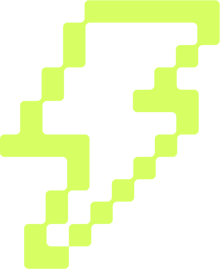

Development environment
Boilerplate projects include a complete, modern Python development environment. This section documents that Development Environment and its parts: the Toolchain, the dev loop, the Project Layout, and their Configuration.
Toolchain
Boilerplate fills each slot the dev loop uses with one preconfigured, overridable tool rather than a menu, and the toolchain lists the picks. They are set up on your machine, in each project and in your editor — see A whole environment, one pick per slot; the landscape holds the full taxonomy.
uv
Dependency & environment manager. An extremely fast package and project manager (written in Rust) that installs and pins Python, manages your virtual environment, and keeps installs reproducible from pyproject.toml — day to day, uv sync, uv add <pkg>, uv remove <pkg>. Official docs

RuffLinter & formatter. One fast tool (also Rust) for both jobs — enforces PEP 8, docstrings, and naming, auto-fixes what it can, and formats on save, so style stays out of your way. Official docs
Pyright
Type checker. Catches type errors as you type — live in VS Code via Pylance — so mistakes surface early instead of at runtime. On GitHub
Pytest
Test runner. Discovers and runs your tests from the command line or the VS Code Test Explorer, with fixtures, parametrization, and coverage already wired in. Official docs
 VS Code
VS Code
Editor. Your workspace, pre-wired so the rest of the toolchain just works — format-on-save, live type hints, and test discovery out of the box. Setup guide Official docs
Git
Version control. Tracks your project's history, makes branching and experimentation safe, and syncs with remotes like GitHub. Official docs
The dev loop
The dev loop is the cycle you repeat inside a project, which is test-driven development's red-green-refactor: write a failing test, make it pass with the least code, then refactor with the tests still green. Then run the checks, commit, and start the next turn. Steps 1 and 2 get a project ready; steps 3 and 4 are the loop.
1. Start or clone a project
New project:
Add dependencies as you go — uv add <pkg>, or uv add --dev <pkg> for a development-only dependency.
Existing project:
-
Clone the project:
-
Synchronize the dependencies:
This installs or updates dependencies based on your
pyproject.toml.To upgrade dependencies:
2. Open VS Code
Launch a fully configured editor with linting, auto-formatting, type checks, etc.
Warning
Opening a cloned project before uv sync can leave VS Code without a detected interpreter — see the fix.
3. Red, green, refactor
-
Pytest runs your tests, via the command line or the VS Code Test Explorer. Write a test that fails (red), make it pass with the least code (green), then refactor while it stays green:
The checks run alongside:
-
Ruff handles styling and lint checks in real time and formats on save — or run it yourself:
-
Pyright highlights type issues as you code — or run it yourself:
4. Commit and repeat
Commit each turn that passes its tests and checks, then start the next one. Many commits make one pull request.
Project layout
A consistent project layout helps everyone understand the codebase at a glance — see Project structure for the generated tree.
.vscode/: Local editor settings and recommended extensions ensure a consistent VS Code experiencesrc/: Houses production code. Separating it from tests and configuration files prevents naming conflicts and maintains claritysrc/your_package/: Contains the main application code, including sub-packages and modulestests/: Mirrors the structure of your main package with corresponding test files.gitignore: Lists files and directories (e.g., virtual environments, build artifacts, temporary files, sensitive data) that Git should ignoreREADME.md: Provides an overview of your project's purpose, setup, and usage
Configuration
What boilerplate configures for you
Generated projects arrive with the toolchain pre-wired. Beginners can ignore the specifics and just code; the exact configuration is here when you want it.
The shipped configuration (click to expand)
- Ruff (
[tool.ruff]) —fix = trueand a broad rule set (~26 categories: pyflakes, pycodestyle, isort, pydocstyle with the Google convention, annotations, bugbear, pathlib, pyupgrade, and more), plus docstring code formatting.tests/and__init__.pyget sensible per-file ignores. - Pyright (
[tool.pyright]) —typeCheckingMode = "strict"oversrc/(tests relaxed). Type-checking runs live via Pylance in VS Code and from the CLI withuv run pyright;pyrightships in the dev group. - pytest (
[tool.pytest.ini_options]) —log_cli = true, withpytest-covandpytest-mockin the dev group. - VS Code (
.vscode/) — Ruff as the default formatter for Python and notebooks, format-on-save, and pytest discovery enabled. The interpreter isn't pinned; the Python extension auto-detects.venvin the workspace root.
The authoritative configuration is the generated pyproject.toml and .vscode/ — these summaries point you at it, not away from it. The pyproject.toml guide explains the file itself.
Where next
- VS Code — interpreter selection, extensions, and troubleshooting for the generated
.vscode/setup. - Developer platform architecture — the reference model this environment implements.